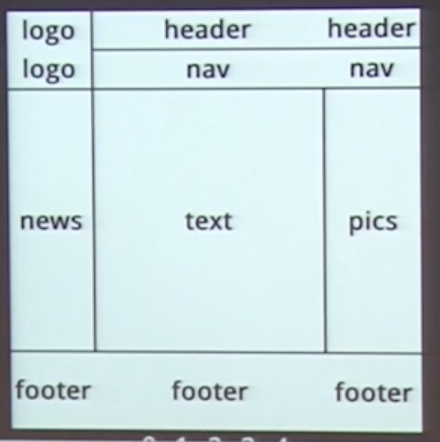

Review requirements
You may want to set the display within CSS. Ex: Make a link bigger
An extension of the content box
Outside the padding
Outside the border
Percentage measurements
Location
Pulls box out of flow
Block and Inline elements take on or interpret styles differently
text-align doesn't work on inline elements, for example
Despite there being a lot of special rules, you can do what you want 99% of the time, so go forth!
Positioned absolutely with respect to the nearest 'relative' positioned element
Inline, but with width and height
img, button, textarea, input, and select
clear: both;
moves the element beyond floats
You can specify how adjacent inline content flows against your floated content.
Tables -> Floats -> Flexbox -> Grid
Proposed 2008 - Working 2015 - Rec 2017
Solves some of the problems we were seeing
Where will it fall down?
Percentage paddings & margins on flex items get different behavior in different browsers
:root { --link-color: #FFF; }
a { color: var(--link-color); }
opacity: 0.5
background-image: linear-gradient(top, #000, #FFF);
box-shadow: 0 2px 2px -2px rgba(0, 0, 0, 0.5);
cursor: pointer;